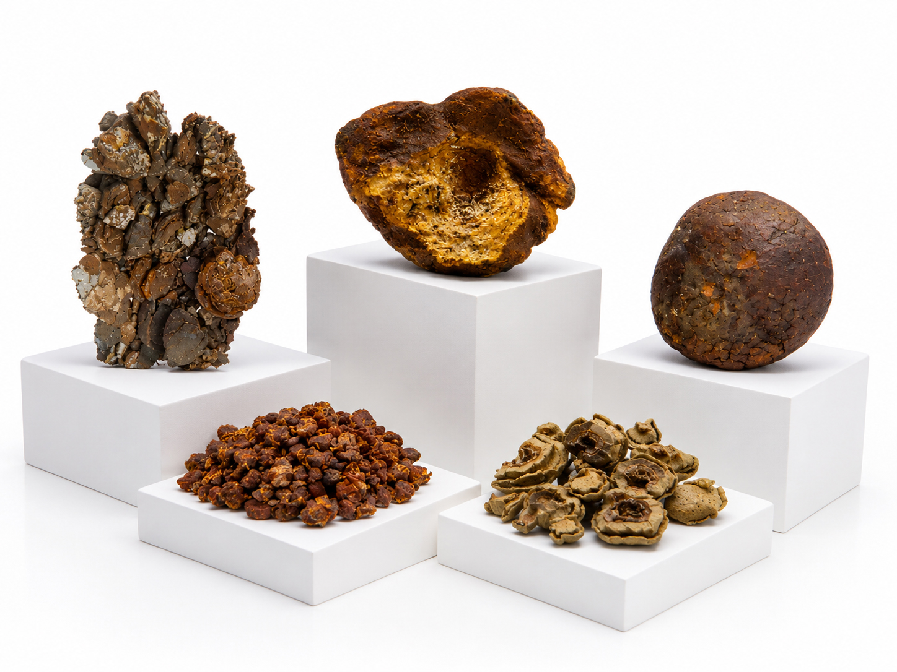
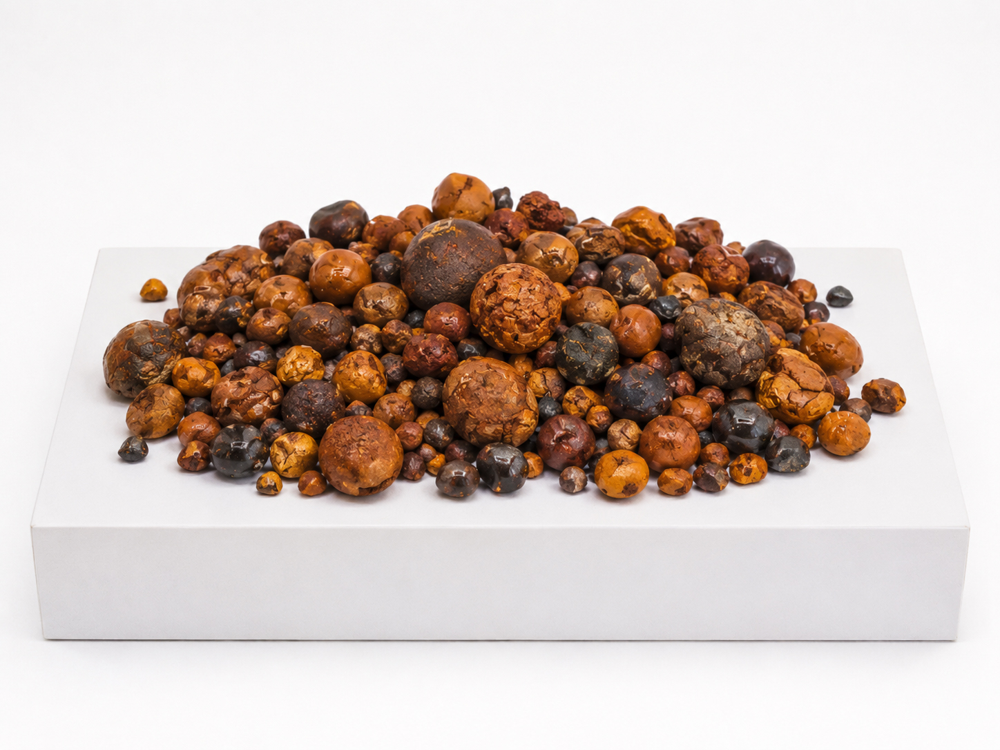
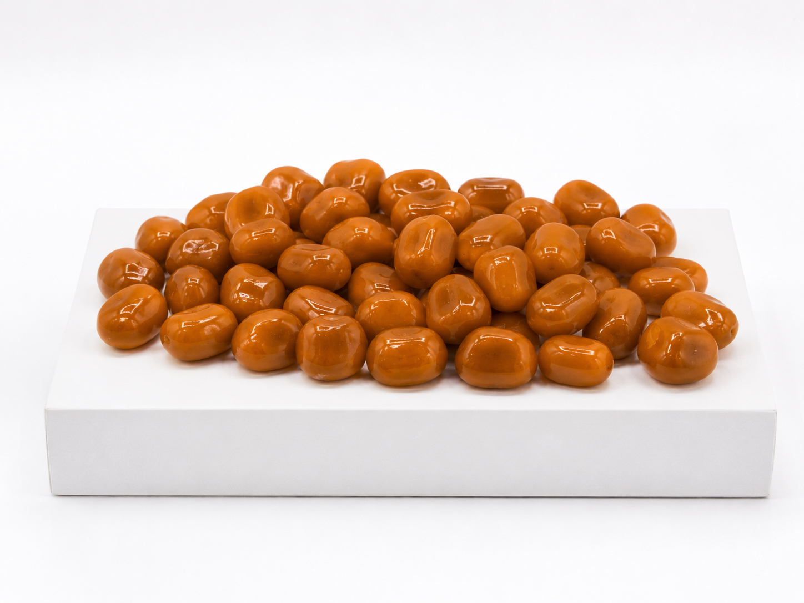
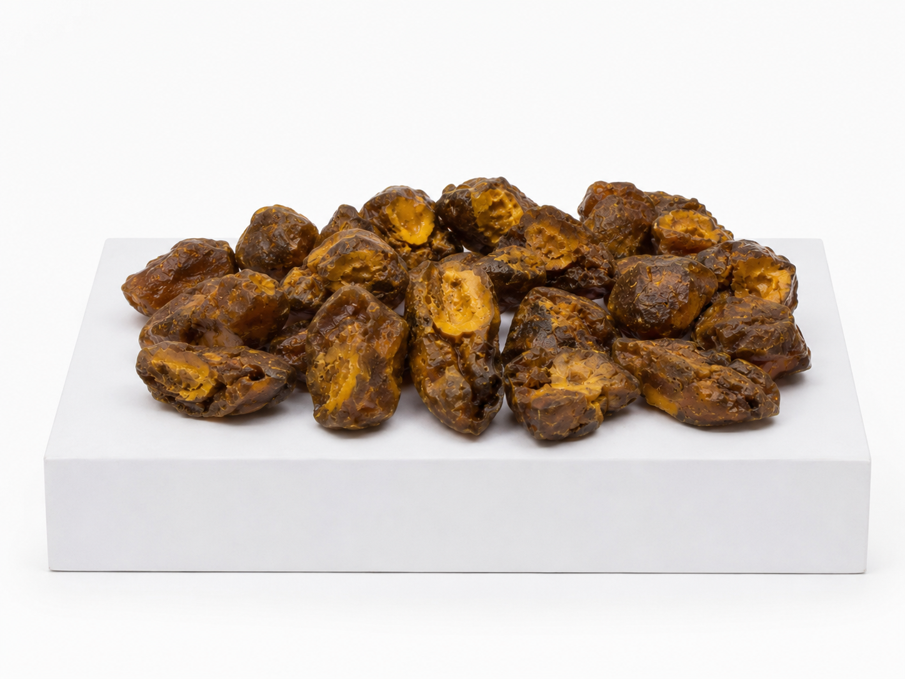
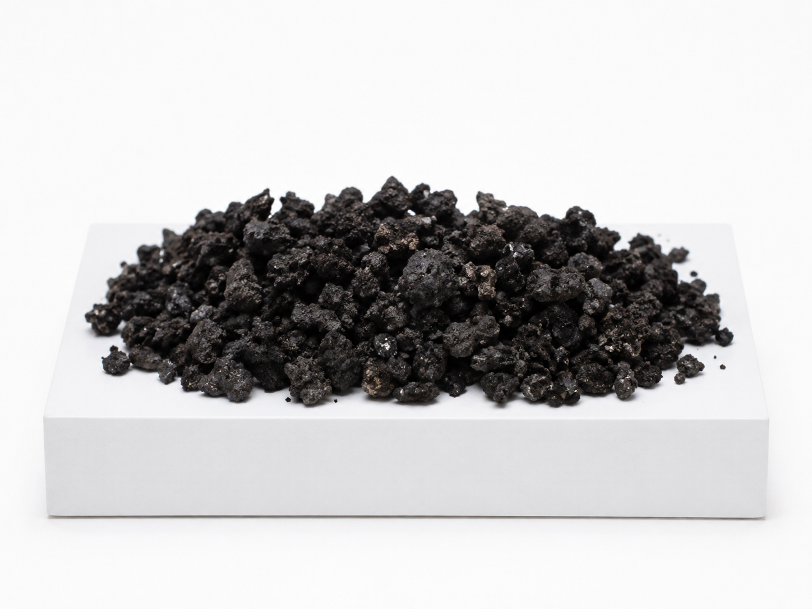
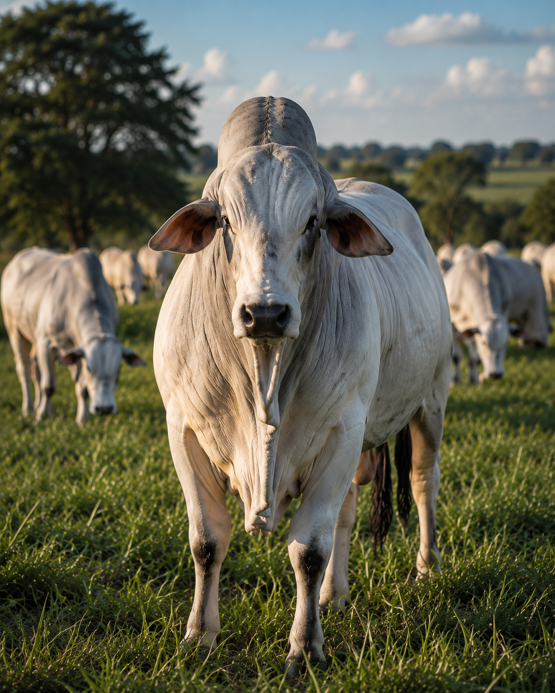
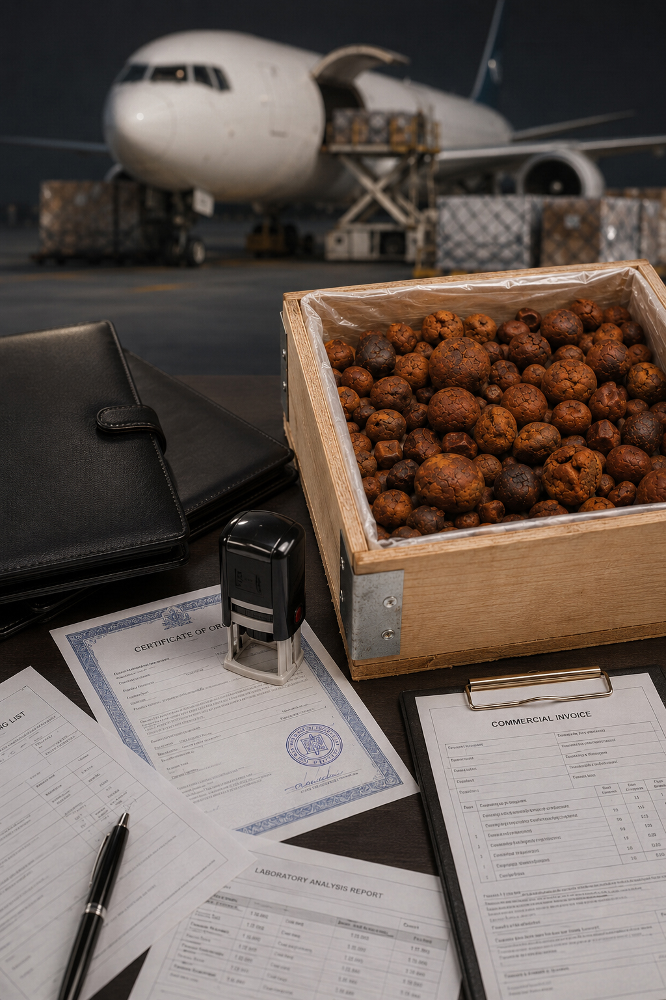

Atuando no mercado internacional na compra, venda e exportação de cálculos biliares bovinos. Qualidade, rastreabilidade e excelência garantida para indústrias ao redor do mundo.
Uma trajetória de excelência desde 2024.
Nascemos no coração agropecuário do Brasil com uma visão clara: conectar as indústrias farmacêuticas globais à mais alta pureza de pedras de fel bovino.
Nossos proprietários e colaboradores atuam há mais de 30 anos no segmento e ao longo dos anos, construímos uma rede sólida de fornecedores, abatedouros e frigoríficos, garantindo processos rigorosos desde a coleta até a exportação. O que começou no interior de Minas Gerais hoje é referência nos mercados mais exigentes do mundo.
Compramos pedras de fel bovino de frigoríficos, abatedouros e representantes. Avaliação justa, transparente e os melhores preços do mercado por grama.
Fornecemos pedras classificadas e certificadas para a indústria farmacêutica e medicina tradicional, atendendo a demandas específicas de qualidade.
Cuidamos de toda a documentação, logística e trâmites aduaneiros. Entregamos o produto com agilidade e segurança em qualquer continente.
Classificação precisa para cada necessidade do mercado.

Caracterizada pela coloração mais clara e estrutura firme, apresenta maior aspecto mineralizado e boa conservação após a secagem.

Considerada uma das categorias mais valorizadas comercialmente, possui coloração amarelo-dourada e aparência homogênea.

Refere-se à pedra recém-extraída ou ainda não completamente seca. Necessita de secagem adequada para preservação de qualidade e valor comercial.

Apresenta superfície mais rígida, seca e aspecto externo semelhante ao couro, característica que originou sua denominação comercial.

Possui coloração escura devido à maior concentração de pigmentos biliares. É uma categoria reconhecida comercialmente, embora geralmente tenha menor valorização que as amarelas.


No mercado internacional de cálculos biliares, a confiança é o ativo mais valioso. Nós garantimos a integridade de cada lote através de processos certificados.
Do Brasil para as principais potências industriais e farmacêuticas.

Capacidade de produção mensal
Somos responsáveis pela compra de
da produção da América do Sul
Preencha o formulário abaixo e
retornaremos em até 24 horas.
Prefere um atendimento mais rápido? Chame-nos diretamente em nossos canais oficiais para uma resposta imediata.